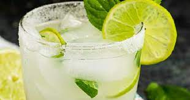

Tequila Limeade

There is little as refreshing as a cool limeade. A bit sweet, a bit tart and deeply rejuvenating, it’s a consummate summertime libation. This Tequila Limeade is an easy to make cocktail that adds serious kick to your summertime parties or afternoon porch hangs.
Ingredients
- 8 cilantro leaves
- 2 wheels fresh jalapeño
- 1/2 ounce light agave nectar
- 11/2 ounces blanco tequila
- 3/4 ounce lime juice, freshly squeezed
- 2 ounces soda water
- Garnish: Cilantro sprig
Steps
- Add the agave nectar, cilantro leaves and jalapeno slices into a shaker and muddle gently.
- Add the tequila and lime juice, and ice, and shake until well-chilled.
- Double-strain into a Collins glass filled with ice.
- Top with the chilled soda water.
- Garnish with a cilantro sprig